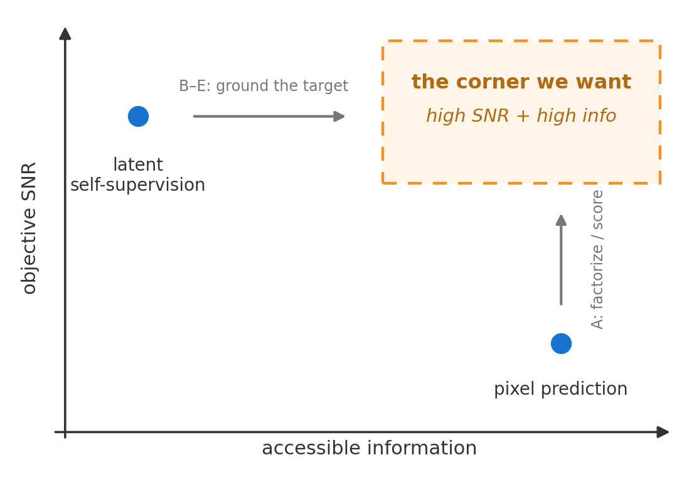
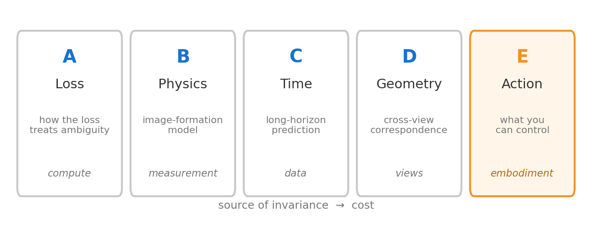
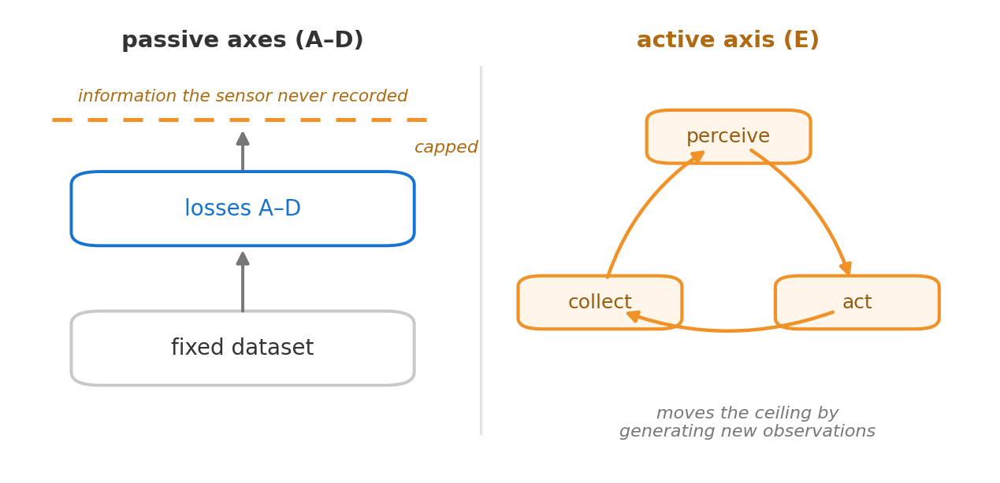

We keep tuning the loss.
The thing worth rethinking is the observation.
Notes to organize my own thinking, after reading James Chen's
Why pure vision isn't scaling
and against what I took from the Bitter Lessons workshop at CVPR. The post and
the workshop arrive at the same place from different sides, and this memo is
where they meet.
Chen's post asks why vision still has no objective of the kind that made
language models easy to scale. His answer factors into three things an
objective needs: signal-to-noise, enough information, and enough semantic
breadth. Text has all three. Pixel prediction fails the SNR test. Latent
self-supervision buys SNR back by throwing information away, and it throws it
away unevenly, so parts of the world stop showing up in the gradient.
The corner we actually want, high SNR and high information at the same time,
stays empty.
The frame makes sense to me. What I want to note down is a small worry: it may
be pointing at something larger than it claims, and that shifts where I would go
looking.

Figure 1. The empty corner. Chen's plane, redrawn. The
horizontal axis is how much information the target keeps, not whether the
input is available. Pixel
prediction has the information but not the SNR; latent self-supervision has
the SNR but not the information. Factorizing or scoring the loss (A) raises
SNR; grounding the target in physics, time, geometry, or action (B–E)
adds information. The high-high corner is what we are after.
Searching the wrong space
One sentence in the post does most of the work for me. For text, data SNR is
already high, so objective SNR “falls out of the data SNR being high.”
If that is true, then the property language has is not a property of the loss.
It is a property of the data. Text is already the output of a compressor. Human
cognition stripped out illumination, viewpoint, texture, sensor noise, and kept
mostly the bits that are about something. A camera does the reverse. Most of the
bits it records are nuisance for almost anything we would want to predict.
So when we look for “the objective that makes vision scale,” I think
we are searching the wrong space. We keep searching objective space, the set of
losses over a fixed set of pixels. The constraint that actually binds is in
target space: what we point the loss at, and where those targets come from. No
amount of loss engineering over RGB recovers information the sensor already
discarded.
Alyosha Efros made the
same point at the same workshop, reading the
bitter lesson
through data: what changed vision was not
only bigger models but the arrival of huge uncurated corpora, so the question
to ask of a stuck problem is whether it is blocked by the model or by the
absence of the right data distribution. Same move, one level down, from the
architecture to the observations.
Where do good targets come from?
Here is the way I have started sorting it. What made language tokens good
targets is that they sit close to a sufficient statistic of the world as it
matters to us, with the nuisance already removed, and a human did the removing.
The vision question is how to build targets like that without a human in the
loop. Every serious proposal I know supplies the missing invariance from
somewhere. Sort them by the source.
| Source | Idea | Where the invariance comes from |
|---|
| A. Loss |
Factorize until each step is nearly unambiguous (diffusion, autoregression), or score a distribution instead of a point. |
How the loss treats ambiguity. Cheapest, most worked. Open residual: tokenizers spend most of their rate on texture. |
| B. Physics |
Predict reflectance, depth, normals, material instead of pixel color. |
An image-formation model splits scene-intrinsic variables from nuisance. Cost: someone must measure or infer them. |
| C. Time |
Predict far enough ahead that fast nuisance has decorrelated away. |
Time as a low-pass filter. The horizon is a continuous SNR knob, rarely studied as the object itself. |
| D. Geometry |
Correspondence across views and across time. |
The world grades the prediction, not a copy of the model. Not circular, unlike an EMA teacher. |
| E. Action |
Condition prediction on your own actions. |
Controllable is signal, uncontrollable is nuisance. The only axis that defines SNR. Most expensive: needs a body. |
A few notes on the rows. Axis A is the one most people are already on: AIM is
clean evidence that plain autoregressive patch prediction, with no semantic
targets anywhere, scales in representation quality
(AIM). Axis E differs in a precise way:
flicker is noise because no policy moves it, object pose is signal because
pushing moves it, so action turns the signal/noise split from something you
estimate into something you define.

Figure 2. Five sources of invariance. Five places a vision
target can borrow its invariance from, ordered loosely by cost. Action (E) is
the only one that defines the signal/noise split rather than approximating it,
and the only one that needs a body.
Push the table one step. Axes A through D all extract better targets from a
fixed set of passive observations. They raise SNR, but they cannot add
information the sensor and the collection policy never recorded. Axis E is
different in kind: if the system acts, it produces observations that were not
there before. So the sharp version of the worry is that the empty corner may not
be reachable from passive pixels at all, and only action gets you there. This is
close to what Vincent Sitzmann
called the active scaling conjecture at the workshop: agency as the data engine,
where the scaling variable becomes the experience the system collects for itself
rather than tokens or frames someone else collected.

Figure 3. Passive ceiling vs active loop. The passive axes
raise SNR on a fixed dataset but are capped by what the sensor and collection
policy recorded. Acting (E) generates observations that were not there before,
which is the part that can move the ceiling. The catch is verifiers.
I do not think this rules out A through D; it orders them. They bootstrap a
perception system good enough to act at all, and the active loop keeps feeding
it once it can. The catch is verifiers: coding, math, and games score
themselves, but a kitchen does not, so as a route this is still a conjecture and
the passive axes are what actually run today.
Depth is a different axis
One axis I left out of the table, because it is orthogonal to all of this rather
than parallel: the depth of the target. Chen's own
constructive proposal,
supervising the whole hierarchy of
an EMA teacher instead of only the last layer, is about how much structure the
target keeps, not about where the target is grounded. The two compose. My guess
is that the strongest version of either needs the other. A single
externally grounded target is informative but coarse, and a deep self-referential
one is rich but circular.
Two hedges
First, I am not claiming latent SSL is doomed.
DINOv2 to v3 keeps improving with
curation and scale. But notice that curation is
the human compressor again, one level up: a person choosing which images count
is supplying invariance by hand. That is consistent with the diagnosis, not
against it.
Second, the table says where good targets could come from, not that any of them
is easy. B through E each trade the annotation bottleneck for a measurement,
infrastructure, or embodiment bottleneck. The only claim I am confident about is
that those are the right bottlenecks to be stuck on, and that “find a
better loss for the pixels we already have” is not.
To close: Chen asks why there is no objective that scales. After the workshop, I
think the reason is that we keep tuning objectives when the thing to rethink is
the observation. Efros's data-centered reading says much the same, that it was
the data distribution rather than the architecture, and Sitzmann's active
scaling conjecture goes one step further, that the most useful data distribution
may be the one an agent collects for itself.